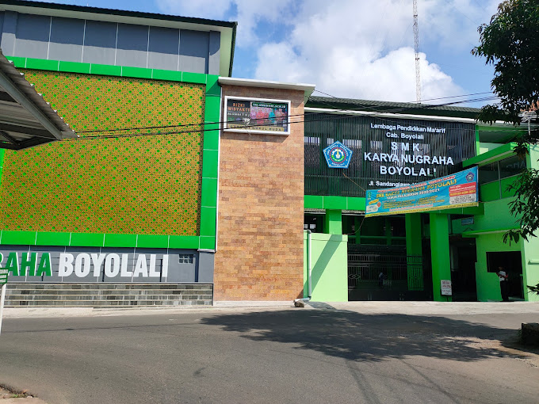

Sejarah Sekolah
Berikut adalah sejarah singkat tentang sekolah kami:
SMK Karya Nugraha Boyolali adalah sekolah menengah kejuruan swasta yang berlokasi di Jalan Sandanglawe, Karanggeneng, Kecamatan Boyolali, Kabupaten Boyolali, Jawa Tengah. Sekolah ini didirikan pada 8 Mei 1991 dan telah mendapatkan akreditasi A berdasarkan keputusan BAN-SM pada tahun 2019. Dengan luas tanah mencapai 5.119 m², SMK Karya Nugraha Boyolali memiliki berbagai fasilitas pendukung, seperti ruang kelas yang memadai, laboratorium IPA dan komputer, perpustakaan, serta fasilitas sanitasi yang cukup untuk memenuhi kebutuhan siswa.
Sebagai institusi pendidikan berbasis kejuruan, sekolah ini menawarkan berbagai program keahlian, mulai dari Perbankan Syariah, Teknik Bodi Otomotif, Teknik dan Bisnis Sepeda Motor, Teknik Kendaraan Ringan Otomotif, hingga Teknik Komputer dan Jaringan. Dengan jumlah tenaga pengajar sekitar 60 orang dan siswa sebanyak 1.256 orang yang terdiri dari 988 laki-laki dan 268 perempuan, sekolah ini terus berkomitmen untuk memberikan pendidikan yang berkualitas dan relevan dengan dunia industri.
Di bawah kepemimpinan Sarbiyanto, SMK Karya Nugraha Boyolali telah memperoleh sertifikasi ISO 9001:2000 sebagai bukti penerapan sistem manajemen mutu dalam proses pembelajarannya. Selain itu, sekolah ini juga aktif dalam berbagai kompetisi dan telah meraih sejumlah prestasi, seperti Juara Olimpiade Sains dan Ke-NU-an (Oskanu) III Jawa Tengah 2024, Juara 1 Pencak Silat tingkat Provinsi pada tahun 2015, serta beberapa penghargaan dalam bidang seni dan budaya.
Setiap tahunnya, sekolah ini membuka Penerimaan Peserta Didik Baru (PPDB) bagi calon siswa yang ingin mendapatkan pendidikan kejuruan berkualitas. Informasi lebih lanjut dapat diakses melalui situs resmi sekolah di https://smkknbi.sch.id/. Bagi yang ingin menghubungi sekolah, dapat mengakses kontak melalui telepon di (0276) 321749 atau melalui email smkknbi@yahoo.co.id. Dengan komitmen terhadap peningkatan kualitas pendidikan vokasi, SMK Karya Nugraha Boyolali menjadi salah satu pilihan unggulan bagi siswa yang ingin mengembangkan keterampilan di dunia industri atau melanjutkan pendidikan ke jenjang yang lebih tinggi.
